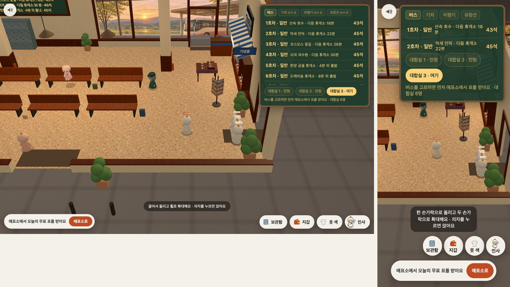
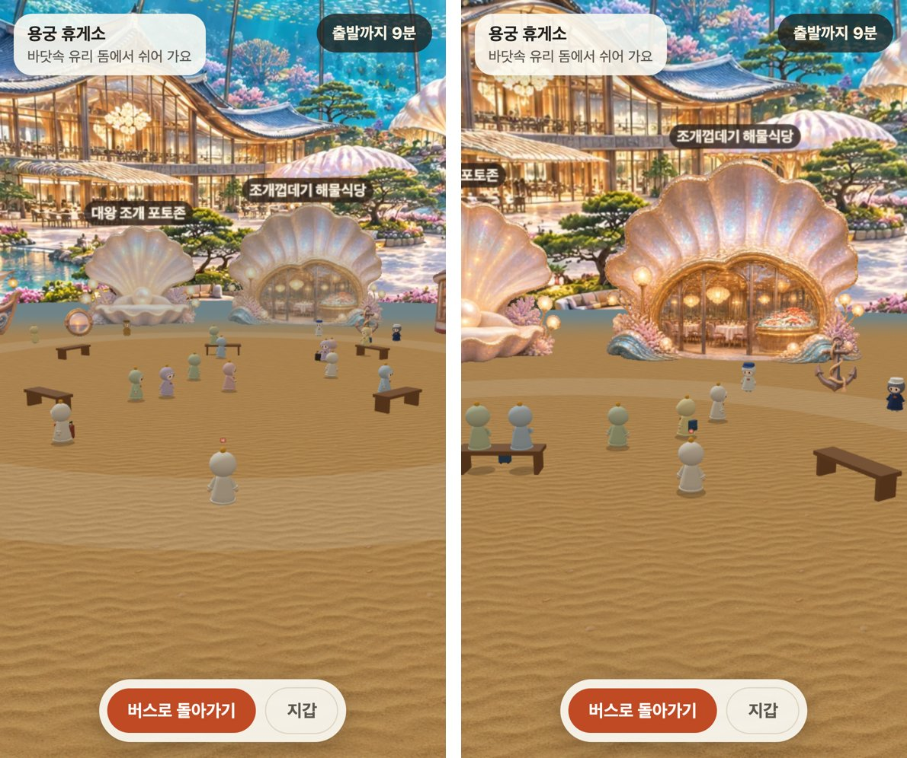

터미널 대합실에서 무료 표를 받고 버스에 앉으면, 목적지 없이 창밖이 흐르는 웹 서비스입니다. 바쁜 하루 사이 잠깐 쉬어 가고 싶은 사람을 위해 만들었습니다.
이런 분이 씁니다
휴대폰이나 컴퓨터 브라우저로 10분이든 한 시간이든 잠깐 쉬어 가고 싶은 일반 이용자
풀어낸 문제
짧은 틈에 쉬려 해도 손에 잡히는 건 할 일과 알림이 많은 앱입니다. 게이트웨이는 설치와 채팅 없이 링크 하나로, 다른 사람과 같은 버스에 조용히 앉아 있는 시간을 줍니다.
아이작브릿지 개발 범위
three.js로 그린 3D 터미널 대합실과 버스 안, 버스 한 대를 서버 방 하나로 나눈 실시간 동승(Cloudflare Workers와 Durable Objects), 출발 시각으로 계산해 모두가 같은 창밖을 보는 구조, 휴게소, 라디오, 지갑과 마일리지, 구글 로그인, 4개 언어 화면, 라디오 관리자 화면
주요 기능
- 01
함께 타는 버스
같은 버스에 탄 사람들은 같은 순간에 같은 창밖을 보고, 옆자리에 누가 앉아 있는지 보입니다.
- 02
창밖과 날씨
스무 곳의 풍경이 이어지고, 낮과 밤은 한국 시각을 따르며 비와 눈이 창에 맺혔다 녹습니다.
- 03
테마 휴게소
버스는 30분마다 휴게소에 서고, 내려서 걷고 먹고 사진을 찍을 수 있습니다.
- 04
버스 라디오
같은 버스는 같은 곡을 함께 듣고, 좋아하는 유튜브 노래를 담아 혼자 들을 수도 있습니다.
- 05
말 대신 선물
채팅 없이 인사, 선물, 친구 맺기, 편지로 다른 승객과 마음을 주고받습니다.
- 06
마일리지
버스에서 내리면 탄 거리만큼 마일리지가 쌓입니다.
화면으로 보기


다음 프로젝트MARBL Works→
비슷한 일을 소프트웨어로 풀고 싶다면, 지금의 상황부터 알려 주세요.
프로젝트 문의하기